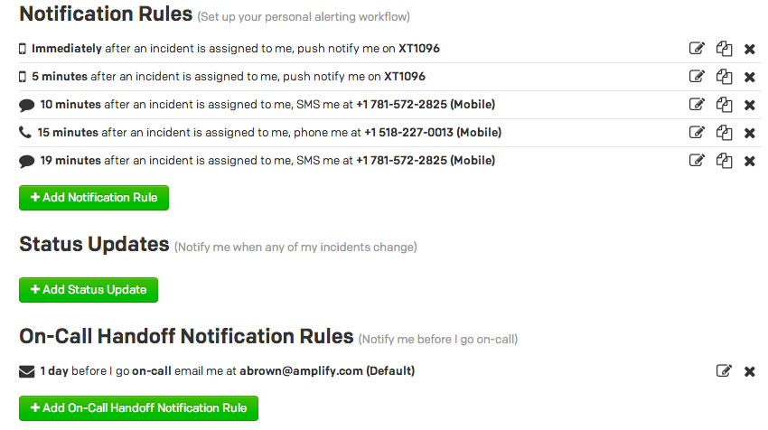
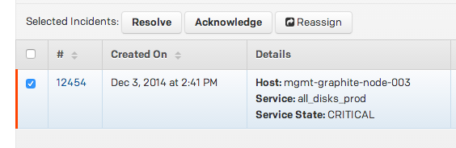
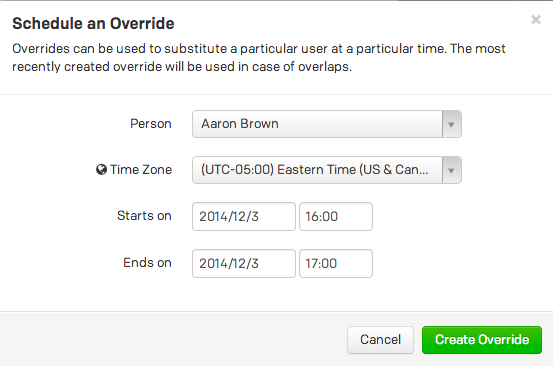
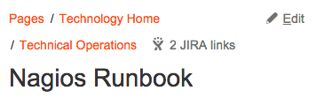
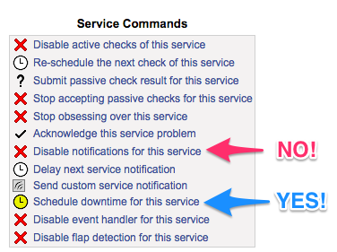

SysEng
On-call @ Amplify
Staying Sane in an on-call world
Aaron Brown
Responsibilities
-
Wield the pager and respond within SLA
- Perform deploys and provide deployment support
- Point of contact for production problems
- Find someone who can fix the problem
- Communicate outages caused by infrastructure failure
SLA
Times respresent our internal SLA for time to first response.
| Environment | During School | Off-Hours |
|---|
| prod | 5 mins | 15 minutes |
| mgmt/ci* | 15 mins | 30 mins |
| filtering | 15 mins | 15 mins |
| other | 30 mins | 2 hours |
* some mgmt & ci services are prod-like and might require the prod escalation
Time To First Response
Time from receipt of initial alert until triage begins.
Can't respond in time? ESCALATE!
Triage
Is a customer-facing service down (or super-slow)?
Check:
How bad is it?
| Symptom |
How Bad Is It? |
| Pingdom alert? |
Pretty Bad |
| Sharp NewRelic Throughput Drop? |
Pretty Bad |
| Sharp Latency Increase In New Relic? |
Not great |
| Sharp Increase in Errors in Kibana? |
Depends |
| A Brazillion Nagios Alerts? |
Depends |
| 1 Application Server Not Responding? |
Probably No Big Deal |
Outages
- Any customer-facing service behaving abnormally is an outage.
- Communicate outages to
access.outage@amplify.com and #outage
within 10 minutes of identification.
- Delegate outage communication, if necessary
- Contact Aaron!
Outages
- Err toward over-communicating outages if there is any doubt
-
Official
Incident Management
documentation is on Confluence.
Severity Definitions
| Impact Magnitude |
Work-around |
No work-around |
| 1-3 users |
3 |
3 |
| 4-25 users (1 class) |
3 |
2 |
| 26-50 users (>= 2 classes, < 1 school) |
2 |
1 |
| 51+ users (>= 1 school, >= 10% district) |
1 |
1 |
| > 2000 users |
1 |
1 |
Pager Duty Notifications
All Nagios & Pingdom alerts and emails sent to pageops@amplify.com
go through PagerDuty
Set up your Notification and Handoff Notification Rules.

Pager Duty Escalations
- After 20 minutes, unacknowledged alerts are automatically escalated to backup on-call
- 20 minutes later, unacknowledged backup on-call alerts escalated to primary on-call
- rinse, repeat ^
Nagios/PagerDuty Integration
- Nagios service goes CRITICAL
- Nagios notifies PagerDuty every
$notify_interval seconds
- PagerDuty rolls up alerts based on de-duplication rules
- PagerDuty alerts
- Nagios sends resolution when service goes OK
- 2-3 repeat until service clears
Pager Duty Actions

Acknowledging an alert silences it for 4 hours.
Resolving an alert tells PagerDuty it's fixed
If it's not resolved in Nagios, it will just re-alert you! PagerDuty does not talk to Nagios
Reassign will make the alert page another person
Nagios/PagerDuty Disconnect
- On-call resolves alert in PagerDuty. Still CRITICAL in Nagios
- Nagios continues to notify PagerDuty every
$notify_interval seconds
- PagerDuty thinks this is a new alert
- PagerDuty Alerts on-call again
Moral: Nagios is the source of truth.
Be Responsible
- Don't ACK something unless you're actively dealing with it
- Schedule an On-call Override or downtime services if you're working on something

Be Responsible
- Understand what a service check does before disregarding - RTFC
- If there is no runbook entry, add it

- Schedule downtime, don't disable notifications
